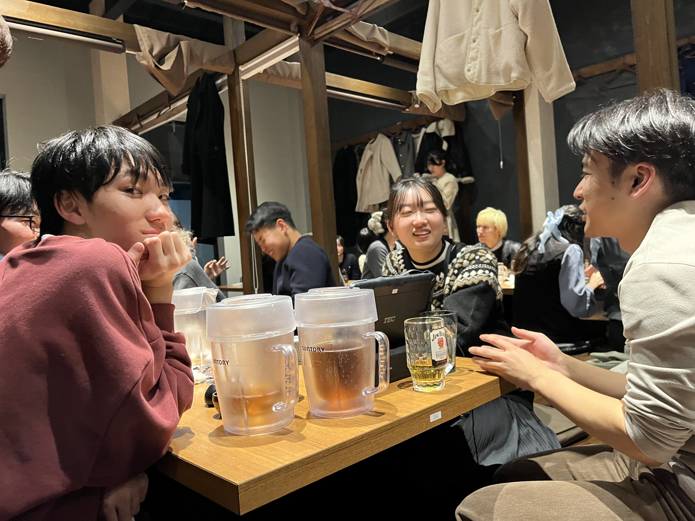

こんにちは、荻原です。
今日は中学生の頃からやっていることについてお話しします。
私は中学生の頃からプログラミングに興味を持ち、独学で学び始めました。
今でもその興味は変わらず、日々新しい技術を学ぶことに楽しみを感じています。
Dorayaki Blog

投稿日: 2025年4月24日

こんにちは、荻原です。
今日は中学生の頃からやっていることについてお話しします。
私は中学生の頃からプログラミングに興味を持ち、独学で学び始めました。
今でもその興味は変わらず、日々新しい技術を学ぶことに楽しみを感じています。